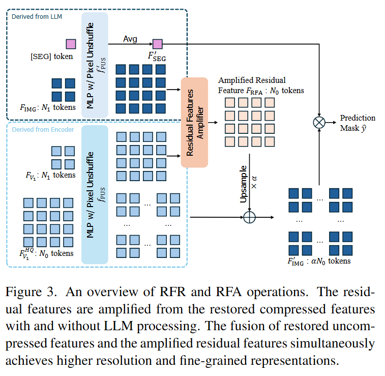
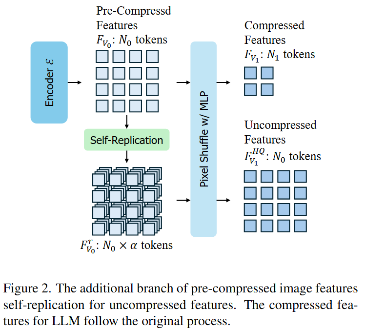
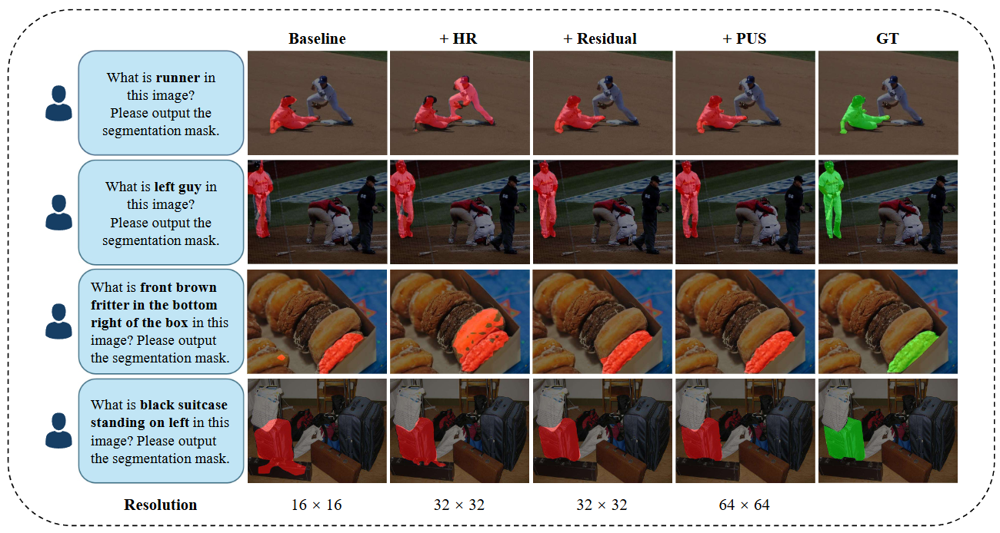
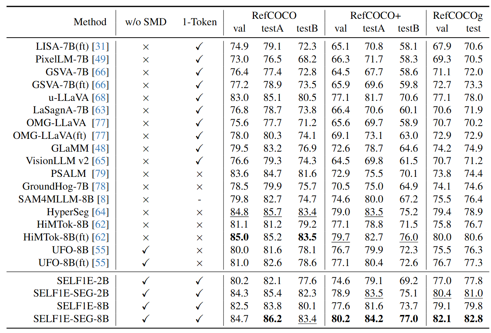
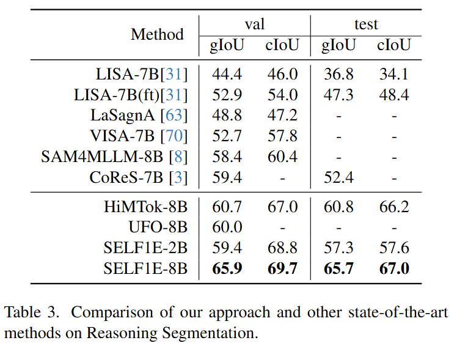

[SEG] token for segmentation.Our project aims to investigate whether and how we can unlock segmentation ability from MLLM itself with one segmentation embedding (SELF1E) while achieving competitive performance, thus eliminating the need for external decoders.
First, we retain image features at their original uncompressed resolution, and refill them with residual features extracted from MLLM-processed compressed features, thereby improving feature precision.
Subsequently, we integrate pixel-unshuffle operations on image features with and without LLM processing, respectively, to unleash the details of compressed features and amplify the residual features under uncompressed resolution, which further enhances the resolution of refilled features.
Moreover, we redesign the attention mask with dual perception pathways, i.e., image-to-image and image-to-segmentation, enabling rich feature interaction between pixels and the segmentation token. SELF1E serves as a step forward in integrating segmentation ability inside MLLM.


SELF1E produces competitive and interpretable segmentation results across semantic, referring, and reasoning segmentation benchmarks.

On RefCOCO family benchmarks, SELF1E achieves solid and competitive performance compared with methods that rely on external decoders.

On ReasonSeg, SELF1E demonstrates strong reasoning segmentation ability using only a single segmentation token.

@inproceedings{zhang2026self1e,
author = {Zhang, Anqi and Ji, Xiaokang and Gao, Guangyu and Jiao, Jianbo and Liu, Chi Harold and Wei, Yunchao},
title = {SELF1E: Rethinking MLLM Itself as a Segmenter with a Single Segmentation Token},
booktitle = {Proceedings of the IEEE/CVF Conference on Computer Vision and Pattern Recognition},
year = {2026},
}